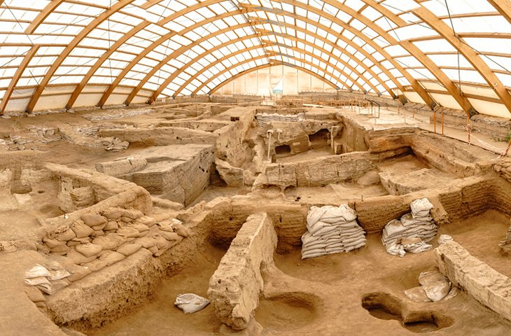

Neolitik Dönem’e ait en eski yerleşimlerden bir tanesi olarak tanımlanan Çatalhöyük, ilk ev mimarisi, ilk manzara resmi, ana tanrıça kültü gibi özgün buluntuları ve inanç eserleri ile insanlık tarihine ışık tutmaktadır.
Konya ilinin Çumra ilçesinde yer alan Çatalhöyük, 1958 tarihinde keşfedilmiştir. Çeşitli aralıklarla yapılan bilimsel kazılar günümüzde de kapsamlı olarak devam etmektedir. Olağan dışı sanatıyla hayranlık uyandıran Neolitik Kent Çatalhöyük’te ilk buluntular MÖ 7400 yıllarına tarihlenmektedir. Kent, medeniyetin ve ziraatin temellerini anlamamızda uluslararası anahtar olarak tanımlanmaktadır. Çatalhöyük’ün Neolitik yerleşim tarzı ve kent planının eşitlik ideallerini yansıttığına inanılmaktadır.